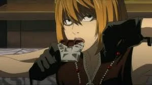

Faqja kryesore

Mello
|  | ||||
|---|---|---|---|---|
| Statusi | Mosha | Debutimi | ||
| "Pavarësisht se çfarë duhet të bëj, do ta arrij përpara Near." | i vdekur | 14 (fillimi) 19-20 (pas kalimit të kohës) | Episodi i njëzetë e gjashtë | |
| Mello (メ ロ, Mero) është më i moshuari nga dy pasardhësit e L të rritur në Wammy's House, Shtëpia e Fëmijës Watari për fëmijë të talentuar në Winchester, Angli. Kur Roger kërkon që Mello dhe Near të punojnë së bashku për të kapur Kira, Mello refuzon, duke treguar ndryshimet midis tyre. Ai largohet nga jetimore menjëherë pas kësaj dhe në fund kërkon ndihmë nga Mafia. | ||||
Autori i faqes: Rei Hysenji
reihysenji@hotmail.com
© E drejta e autorit @ publikuesit e Death Note:
Shueisha
Viz Media
Konami Sports Club Co., Ltd.